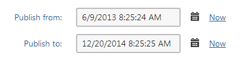

Scheduling pages for publishing
Kentico allows you to specify when a page is published. When you edit a page in the Pages application on its Form tab, you can typically find the Publish from/Publish to fields at the bottom of the form:

Scheduling pages for publishing
When you set the Publish from/Publish to values, the page will be displayed on the website only during the given time period.
If you do not set the Publish from value, the page is displayed on the live site immediately.
If you do not set the Publish to value, the page stays published until manually unpublished.
If the page is outside of the set Publish from/Publish to interval, i.e., the page is not yet published or the Publish to time is in the past, the page stays visible for you in the content tree of the Pages application and behaves as an unpublished page. You can always change the Publish from/Publish to values to republish or unpublish the page.
Scheduling pages that use workflow/versioning
If you set the Publish from/Publish to values to pages that use workflow, they still need to be approved before being published. Once approved, the page is published by a scheduled system process. The process is set to execute every minute by default. The process only publishes the page if the page already reached its Publish from time. You can check the status of this process in the Scheduled tasks application. Choose the website and search for the Content publishing task.